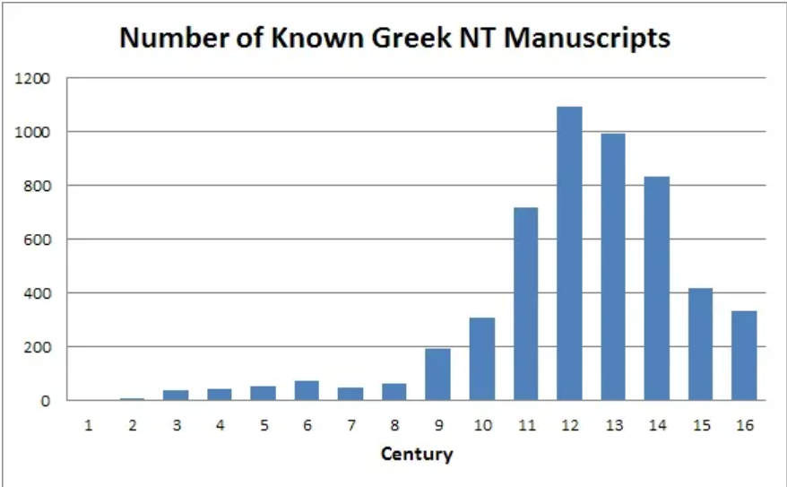

Here, we will be going through several common claims which Christians are starting to use in an attempt to authenticate the New Testament.
1) Manuscripts
The first common claim which should be addressed, is the idea that the NT is attested to by 5700 Greek Manuscripts. However, while true, this argument is extremely dishonest and deceptive. To start the refutation, this number alone, does not prove that the text we have today is authentic, nor reliable. It simple means that there a decent number of manuscripts. A key note to take, is that we need to understand that over 94% of them came after the 9th century, and that more than 80% of these manuscripts contain exclusively the Majority text. And the Alexandrian is only represented in as little as "10%" [Aland, pp.102, 128]. This means that only about 570 manuscripts are represented by the more authentic text type, as the Byzantine text type contains the most variants and corruption amongst manuscripts, and is accepted by academics to be the less authentic text type.
Another problem is that we have barely anything within the first 3 centuries, with a minimal amount of fragmentary evidence existing. However, from the extant manuscripts that we do have, there are an estimated 500,000 textual variants, not including spelling mistakes. [Elijah Hixon, Peter J Gurry, Daniel Wallace, 'Myths and Mistakes in the New Testament Textual Criticism', p210].
And to add to this, the earliest complete New Testament came in the middle of the 4th century. And this codex, as well as other of our earliest codex's, omit many verses which we now see in our modern bible versions/in the KJV. Below, is a list of verses omitted from Codex Sinaticus:
Omitted: Matt. {12:47}, 16:3, 17:21, 18:11, 23:14, 24:35, Mark 1:33, 7:16, 9:44, 46, 10:36, 11:26, 15:28, 47, 16:9-20, Luke 10:32, {17:35}, 17:36, John 5:4, 7:53-8:11, 9:38, 16:15, {19:20}, 20:6, {21:25}, Acts {2:21}, 8:37, 15:24, 24:7, 28:29, Rom. {11:30}, 16:24, {1Cor. 2:15}, {Eph. 2:7}, {Heb. 4:9}.

2) Church Father Citations
This is another popular claim which is made by Christians. However, like before there are several problems. The first issue is that the Church fathers are a tertiary source within textual criticism, whereas the Greek manuscripts are the Primary source used when determining the authenticity of a variant reading. The Church Fathers alone, are good in letting us know if a variant reading existed at their time, but are not to be soely relied up on to determine the authenticity of a verse. This is as the manuscript that they may have being reading from, may not have being authentic itself. And we have no way to analyse if the manuscript was authentic, as we do not have access to many manuscripts within the early centuries. (Presuming the church father was an early one)
Additionally, academics recognise that "Until about A.D. 150 the quotations are of little value for textual purposes." [Vincent Taylor, The Text of the New Testament, A Short Introduction, London: Macmillan, 1961, p.40] and that "Little help is gained from the Greek Apostolic Fathers for the text.” [A. T. Robertson, An Introduction to the Textual Criticism of the New Testament, Tennessee: Broadman Press, 1925, p.134]. Furthermore, if the father quotes the same passage more than once, it often happens that he does so in divergent forms. [Bruce Metzger and Bart Ehrman, The Text of the New Testament, Its Transmission, Corruption, and Restoration, p.128]. Due to this, we can not put too much emphasis on the Church Father quotes.
3) Translations
This argument consists of a claim that we have a lot of translations, and that somehow authenticates todays texts. I think that this argument is much weaker and easier to critique, so it will be dealt with quicker than the previous responses. Firstly, having many translations does not mean anything when we have not authenticated the Greek manuscripts that they are being translated from. Because translations which are from corrupt Greek manuscripts, are useless and just cause more harm than good. Not to mention that there are an extremely high amount of variants amongst the manuscripts as stated above, with some academics setting the bar as high as 750,000.